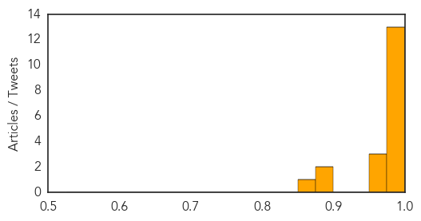

Meningitis
30-Day Web Trend
0 alerts, 0 warnings

30-Day Twitter Trend
0 alerts, 0 warnings

Article Locations

Article Confidences

Top Articles:
- 0.993
- Several vaccines available to control meningitis
- 0.950
- Fighting Meningitis Globally
- 0.893
- Queen's Professor Melody Torcolacci, Who Taught Anti-Vax Material, Takes Leave
- 0.813
- Second Acadia student has meningitis
- 0.670
- Latest on likely case of bacterial meningitis at Yale University
- 0.590
- No outbreak of CSM in Bongo District
- 0.587
- JFK Memorial Hospital fined for discharge safety
- 0.578
- Students sought who partied with Oregon man stricken by meningococcal disease
- 0.576
- Students sought who partied with Oregon man stricken by meningococcal disease
Top Tweets:
-
No tweets found for Feb 11, 2015
Swine Flu
30-Day Web Trend
17 alerts, 6 warnings

30-Day Twitter Trend
0 alerts, 0 warnings

Article Locations

Article Confidences
Top Articles:
- 1.000
- 216 dead across India due to swine flu in February
- 0.998
- Swine flu claims life in Hooghly, 9 affected in Kolkata
- 0.997
- Swine flu in India: 17 succumb to Swine Flu in Indore
- 0.997
- Rajasthan reels under swine flu, toll climbs to 73
- 0.994
- In 24 hours, 16 Mumbaikars test positive for swine flu
- 0.993
- 34 Fresh Cases of H1N1 in City Limits
- 0.992
- Union Health Minister J P Nadda reviews swine flu situation in Gujarat
- 0.992
- H1N1 death toll reaches 14 in State
- 0.991
- Maharashtra on alert after spurt in H1N1 cases
- 0.986
- Give swine flu vaccine to health workers: Govt
- 0.984
- Swine flu on the rise in Uttar Pradesh: Health officials
- 0.981
- Health Ministry holds review meeting on H1N1
- 0.977
- Health Ministry holds review meeting on H1N1
- 0.968
- Health Ministry reviews preventive measures against H1N1
- 0.964
- Health Ministry holds review meeting on H1N1
- 0.964
- Indiablooms - First Portal on Digital News Management
- 0.882
- H1N1 toll crosses 100, over 1,000 tested positive
- 0.881
- A(H1N1): two deaths reported late
- 0.860
- 3 more test positive for H1N1
Top Tweets:
-
No tweets found for Feb 11, 2015